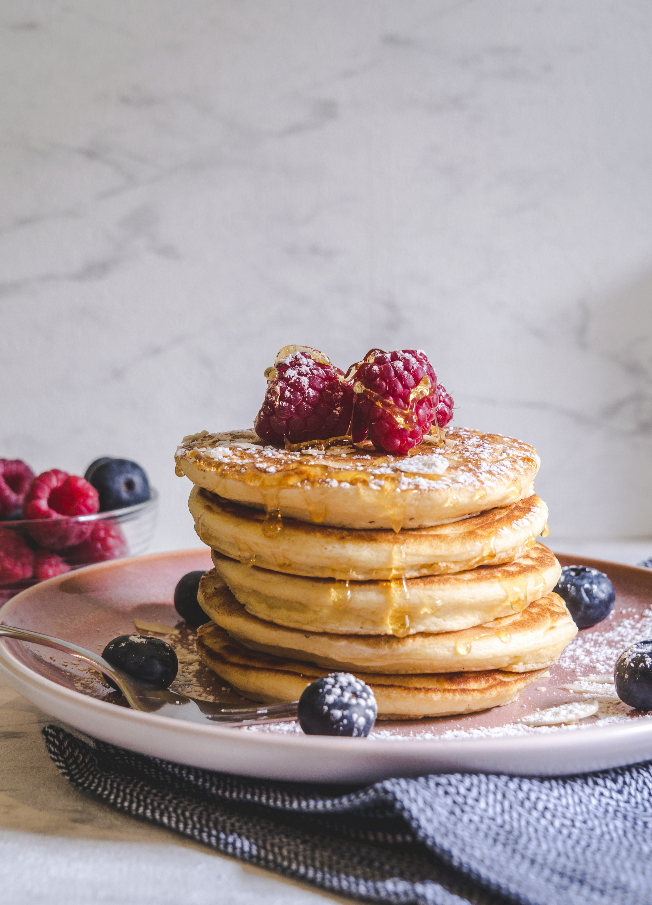

Pancake

Description
Classic pancakes are fluffy, soft, and perfect for breakfast or brunch. This basic recipe is easy to make and can be topped with butter, syrup, fruit, or honey.
Ingredients
- 1 cup all-purpose flour (120 g)
- 1 tablespoon sugar
- 1 teaspoon baking powder
- 1/2 teaspoon baking soda
- A pinch of salt
- 1 egg
- 1 cup milk (240 ml)
- 2 tablespoons melted butter
- 1 teaspoon vanilla extract (optional)
- Butter or oil for cooking
Home